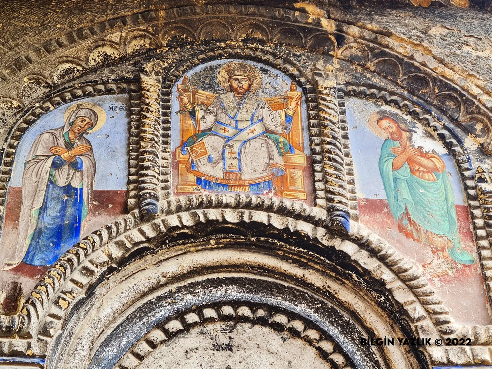

Aziz Georgios'un (St. George) kimliği, dördüncü yüzyılın başlarında Roma İmparatoru Diocletianus döneminde Hristiyanlara uygulanan zulme karşı gelerek isyan eden Romalı bir asker olarak tanımlanmaktadır. Hristiyanlık âlemi için büyük önem taşıyan bu azizle ilişkilendirilen ve yaygın olarak bilinen "Aziz Georgios ve Ejderha" mücadelesi efsanesinin, coğrafi olarak Erciyes Dağı'nın eteklerinde, Ürgüp bölgesinde geçtiği rivayet edilmektedir. Ürgüp'te bulunan ve Aziz Georgios'a ithaf edilen bu kilise, yerel halk arasında Hıdırellez Kilisesi adıyla da anılmaktadır. Yapının ilk inşa tarihine dair kesin bir bilgi bulunmamaktadır. Kilisenin mimarisi incelendiğinde, kuzey bölümünün kaya oyma teknikle oluşturulduğu, güney cephesinin ise kesme taş malzeme ile inşa edildiği anlaşılmaktadır; ancak taş cepheli kısım zamanla tamamen tahrip olmuştur. Bazilikal plan tipine sahip olan yapı, çift apsisli ve üç nefli bir düzene sahiptir. Aziz Yuhannes’in bu kilisede ibadet ettiği ve kutsal suyundan içtiği bilinmektedir. Kilise, 1861 yılında kapsamlı bir onarımdan geçirilmiş ve bu restorasyonun ardından 1864 yılında yeniden ibadete açılmıştır. Kuzey cephesinde, kaya oyma tekniğiyle oluşturulmuş ve birbirine geçişli çok sayıda mekân yer almaktadır. Kilisenin mimari özelliklerinin yanı sıra, duvar resimleri programı da büyük bir sanatsal değere sahiptir. Aziz Georgios'a ithaf edildiğini doğrulayan en güçlü kanıt, iç duvarlarda yer alan, Meryem figürünün altındaki Aziz Georgios'un ejderhayı alt etmesini betimleyen sahnedir. Duvar resimleri programı, dokuz havari, çeşitli aziz figürleri ile 'Üç İbrani Genci Fırında' ve 'İbrahim'in İshak'ı Kurbanı' gibi önemli İncil sahnelerini içermektedir. Duvar resimlerinin incelenmesi, programın belirli bir aşamada yarım kaldığına işaret etmektedir. Kuzey duvarda tespit edilen bir duvar resminin üzerinde 1876 tarihi ve ressamın imzası mevcuttur. Hıdırellez Kilisesi'nin duvar resimlerinde, nadir ve değerli bir pigment olan lazurit kullanılmış olması dikkat çekici bir sanatsal özelliktir. Tarihsel olarak, Hıdırellez şenlikleri Ürgüp'te bu kilise mekânında gerçekleştirilmiş, gençlerin topluca eğlenmesi ve hatta yakın zamana kadar genç kız ve erkeklerin tanışıp etkileşimde bulunmasına izin verilmiştir. Ancak, 1890 yılında alınan bir kararla bu geleneksel eğlencelerin merkezi Çimenli mevkisine taşınmıştır. Kilisenin altında yer alan kutsal su kaynağının varlığı da, bu mekânın tarih boyunca dini ve sosyal törenler için bir odak noktası olduğu tezini güçlendirmektedir. Kilisenin altında yaklaşık 300 metre uzunlukta bir su tüneline ait giriş bulunmaktadır. Kilisede ayrıca bir de arılık bulunmaktadır.
Saint George (St. George) is identified as a Roman soldier who rebelled against the persecution of Christians under the Emperor Diocletian in the early 4th century. The widely known legend of 'Saint George and the Dragon,' associated with this saint of great importance to the Christian world, is said to have taken place at the foot of Mount Erciyes, in the Ürgüp region. This church, dedicated to Saint George, is also known locally as the Hıdırellez Church. There is no precise information on its original construction date. Its northern section was created by rock-cutting while the southern façade was built of cut stone, though the stone-faced part has been completely destroyed over time. With a basilica plan, the structure has a double apse and three naves. It is known that Saint John worshipped here and drank from its holy water. The church was comprehensively repaired in 1861 and reopened for worship in 1864. Its northern façade holds numerous interconnected rock-cut spaces. Beyond its architecture, the wall-painting programme is of great artistic value: the strongest evidence of its dedication is the scene on the interior walls, beneath the figure of the Virgin Mary, depicting Saint George defeating the dragon. The programme includes nine apostles, various saints, and biblical scenes such as 'The Three Hebrews in the Furnace' and 'The Sacrifice of Isaac.' The paintings appear to have been left unfinished at a certain stage; one on the northern wall bears the date 1876 and the painter's signature. Strikingly, lazurite — a rare and precious pigment — was used in the paintings. Historically, the Hıdırellez festivities were held in this church, where young people celebrated together and, until recent times, young women and men were allowed to meet; by a decision in 1890 these celebrations were moved to the Çimenli locality. A holy spring beneath the church strengthens its role as a focal point for religious and social ceremonies; beneath it is the entrance to a water tunnel about 300 metres long. The church also contains an apiary.